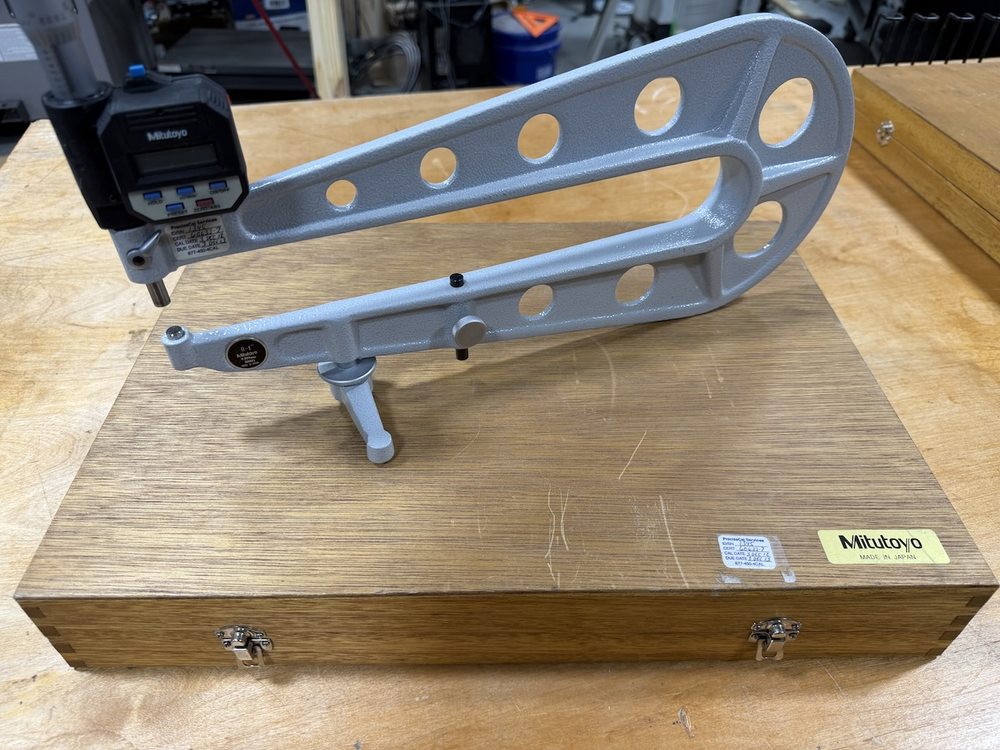
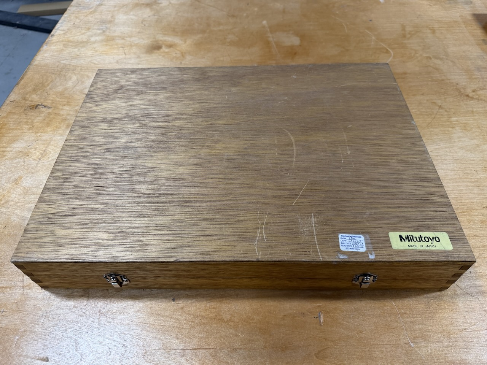
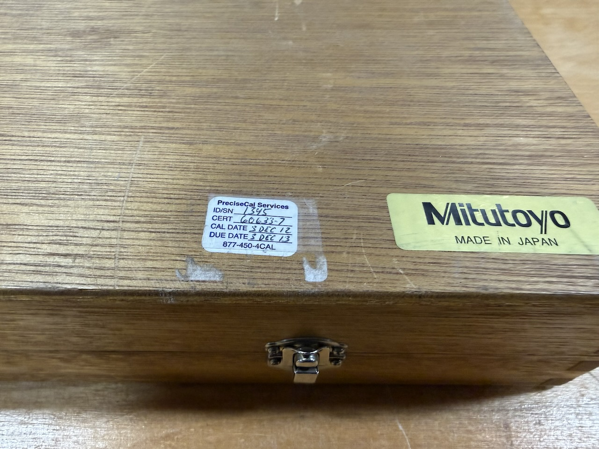
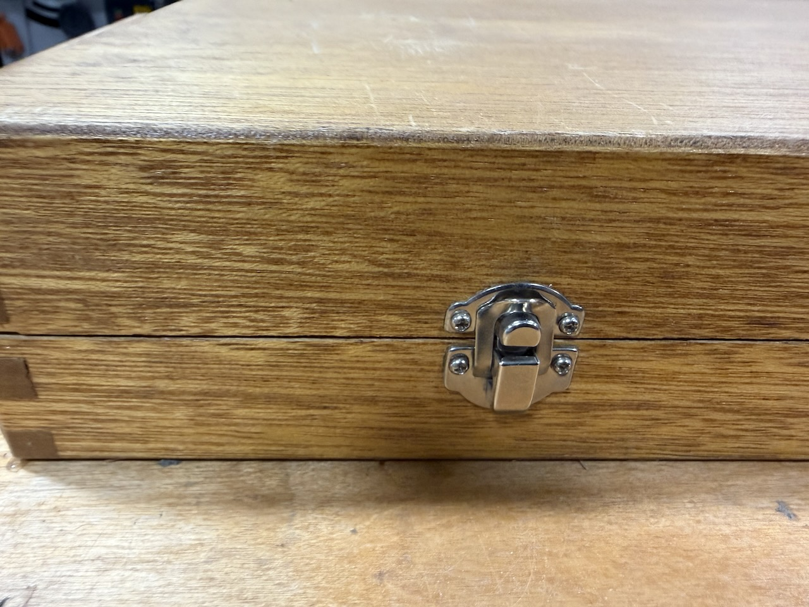
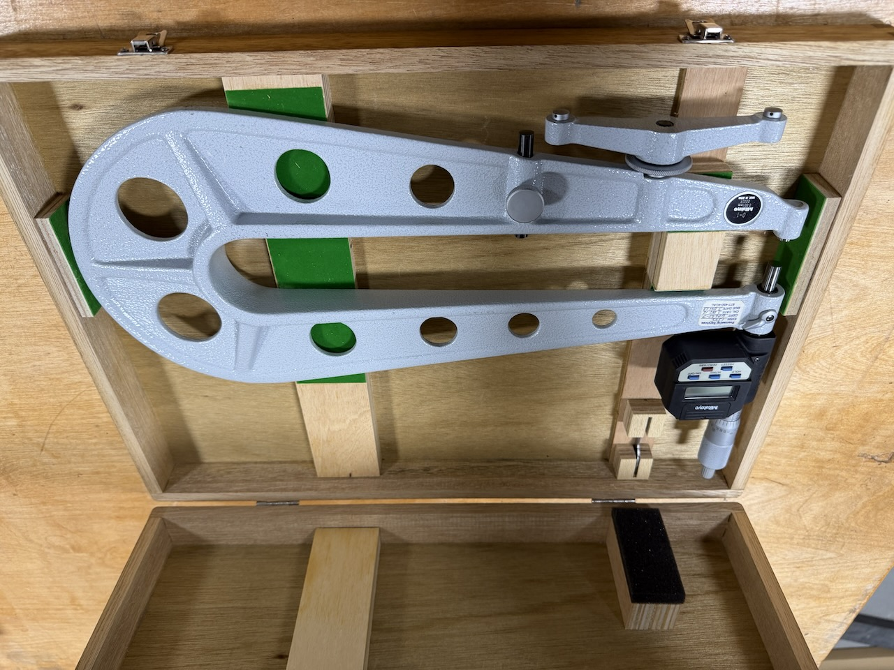
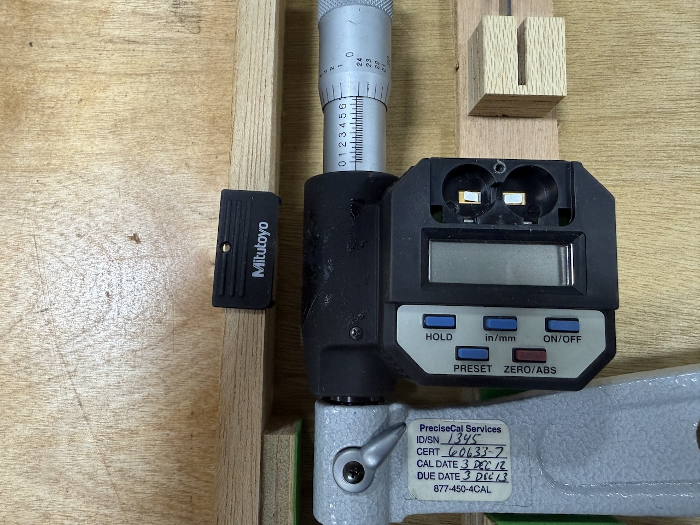

Mitutoyo 389-514 Series 389 Sheet Metal Digital Micrometer — Near Mint w/ Original Case






Up for sale is a Mitutoyo 389-514 Series 389 Sheet Metal Digital Micrometer in near-mint condition, complete with its original Mitutoyo wooden case. This is a serious precision instrument at a significant discount from new — if you know Mitutoyo metrology gear, you know what near-mint Series 389 in a complete original case is worth.
| Manufacturer | Mitutoyo |
| Model | 389-514 |
| Series | 389 — Sheet Metal Micrometers |
| Measurement range | 0–25 mm |
| Resolution | 0.001 mm |
| Accuracy | ±5 μm |
| Protection rating | IP65 (water and dust resistant) |
| Measuring faces | Carbide-tipped |
| Measuring force control | Ratchet stop |
| Functions | Zero-set, origin-set, data output, data hold |
| Display | Digital LCD |
- ✓ Mitutoyo 389-514 digital sheet metal micrometer
- ✓ Original Mitutoyo wooden carrying case — complete, latches fully functional
- ✓ Calibration documentation — PreciseCal Services, December 3, 2012
Near mint. This instrument has seen minimal use and shows no visible wear to the body, frame, or measuring faces. Stored in its original Mitutoyo case throughout its life. All functions verified operational.
- No visible wear on body, thimble, or frame
- Carbide measuring faces in excellent condition — no pitting, scoring, or wear
- Digital readout, zero-set, origin-set, data hold, and data output all function correctly
- Ratchet stop operates smoothly with consistent feel
- IP65 seals intact — no evidence of moisture ingress
- Original wooden case complete and undamaged — latches fully functional
Asking $650 — reasonable offers considered. Happy to answer technical questions, provide additional photos, or share the calibration documentation before you commit.
Contact Seller